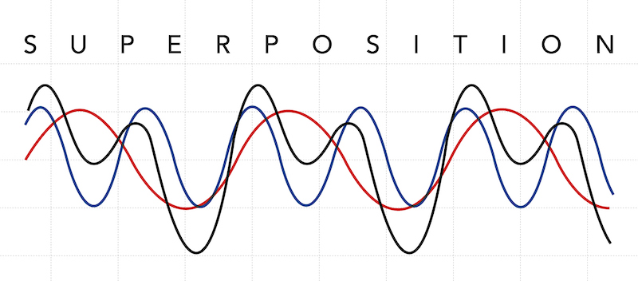
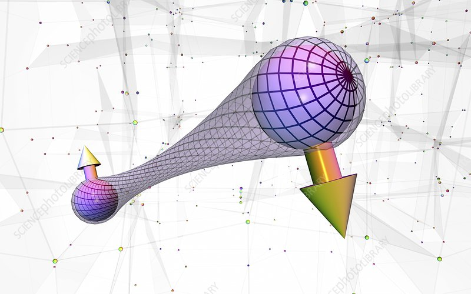

Superposition & Enchevêtrement
Imaginez une pièce de monnaie qui ne tombe ni pile ni face, mais qui existe simultanément dans les deux états à la fois. C'est l'essence de la superposition, un principe fascinant selon lequel une particule quantique peut exister dans plusieurs états simultanément, jusqu'à ce qu'on la mesure et qu'elle "choisisisse" un état unique.
Ce concept peut sembler étrange, mais il a été maintes fois validé par des expériences, comme l'expérience de la double fente avec des électrons. En passant par les fentes, l'électron se comporte comme une onde, explorant tous les chemins possibles simultanément, avant de se "matérialiser" en un seul point sur l'écran lors de la détection.
L'enchevêtrement est un phénomène encore plus étrange et contre-intuitif. Imaginez deux pièces de monnaie liées d'une manière mystérieuse, de sorte que si l'une tombe pile, l'autre tombe automatiquement face, et vice versa, même si elles sont séparées par une grande distance. C'est l'essence de l'enchevêtrement quantique : deux particules, une fois enchevêtrées, partagent un lien instantané, et la mesure de l'état de l'une détermine instantanément l'état de l'autre, quelle que soit la distance qui les sépare.
L'enchevêtrement a des implications profondes pour la compréhension de la nature de la réalité et pourrait révolutionner le domaine de la communication et du calcul quantique. Cependant, il ne permet pas de transmettre de l'information plus vite que la lumière, car il ne permet d'envoyer aucun signal. C'est une corrélation instantanée, mais pas une communication instantanée.
La superposition et l'enchevêtrement sont des concepts clés de la mécanique quantique qui défient notre intuition et ouvrent la voie vers des applications révolutionnaires. Bien que ces notions paraissent paradoxales, elles ont été validées expérimentalement et nous obligent à revoir notre compréhension de la réalité à l'échelle microscopique.